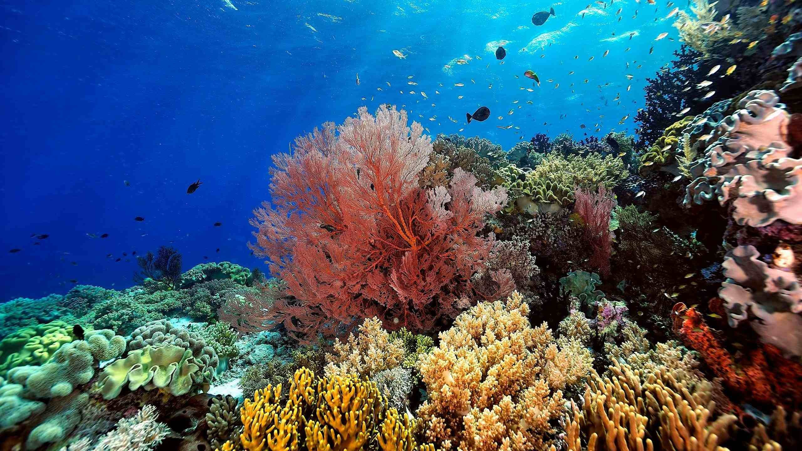

Blu is a company dedicated to restoring coral reefs and protecting marine ecosystems through innovative technology.
About Us
Blu is a pioneering company dedicated to the ambitious goal of restoring coral reefs around the world. Coral reefs are vital marine ecosystems that support a diverse array of marine life, yet they face numerous threats from climate change, pollution, and overfishing. At Blu, we are committed to reversing the damage done to these crucial habitats by leveraging our expertise in advanced restoration technologies.
Our Technology
At Blu, we employ a range of cutting-edge technologies to facilitate the restoration of coral reefs. One of our key innovations is the development of artificial reef structures designed to simulate the natural habitats that corals need to thrive. These structures are meticulously engineered to provide optimal conditions for coral larvae to settle and grow.
Our artificial reefs are made from durable, eco-friendly materials that mimic the texture and composition of natural coral substrates. By creating these environments, we help to accelerate the growth of coral colonies and support the overall recovery of reef ecosystems. Additionally, our technology includes real-time monitoring systems that allow us to track the health and progress of the restored reefs, ensuring that our interventions are effective and sustainable.
Blu’s approach not only aims to restore coral reefs but also to enhance the resilience of these ecosystems against future environmental challenges. Through our innovative techniques, we strive to create vibrant, self-sustaining coral communities that will benefit marine life and contribute to the preservation of ocean biodiversity.
Our Projects
Blu is actively involved in several groundbreaking projects aimed at restoring coral reefs in various locations around the globe. Each project is tailored to the specific needs of the region and incorporates local knowledge and expertise.
For example, our recent project in the Caribbean involves deploying custom-designed artificial reefs to restore damaged coral areas affected by recent hurricanes. In the Pacific, we are working on a large-scale coral nursery to grow and transplant corals to degraded reef areas.
Stay tuned for updates on these and other projects as we continue to make strides in coral reef restoration and marine conservation.
Our Impact
At Blu, we measure our success not just by the projects we complete, but by the lasting impact we have on the ecosystems we restore. Our efforts in coral reef restoration contribute to the revival of marine biodiversity, which is essential for healthy ocean environments.
Through our initiatives, we have successfully restored several coral reef areas, providing habitats for countless marine species and enhancing local fisheries. Our restored reefs not only serve as homes for fish but also provide food sources, creating a thriving ecosystem. We are committed to sharing our findings and experiences with the broader community, inspiring others to join the movement for ocean conservation.
Get Involved
We invite you to be a part of our mission to restore coral reefs and protect marine ecosystems. There are many ways you can get involved:
- Volunteer: Join us in our restoration projects and help make a difference in marine conservation.
- Donate: Your contributions support our initiatives and help fund vital research and restoration efforts.
- Spread the Word: Share our mission with friends and family to raise awareness about coral reef conservation.
Together, we can create a healthier ocean for future generations. Contact us for more information on how you can help!
Contact Us
If you have any questions or would like to learn more about our work, please get in touch with us. We would love to hear from you!